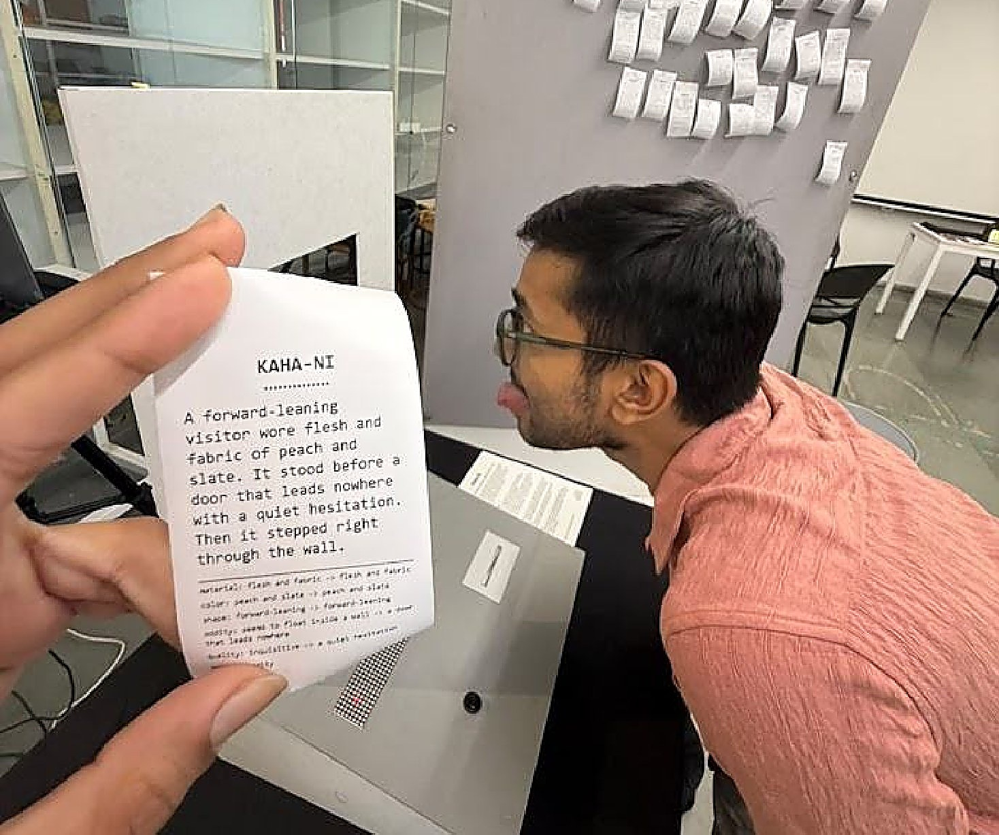
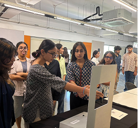
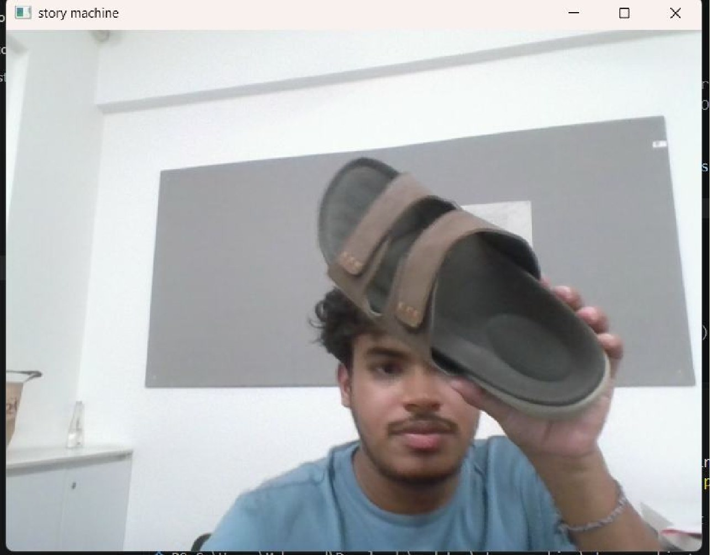
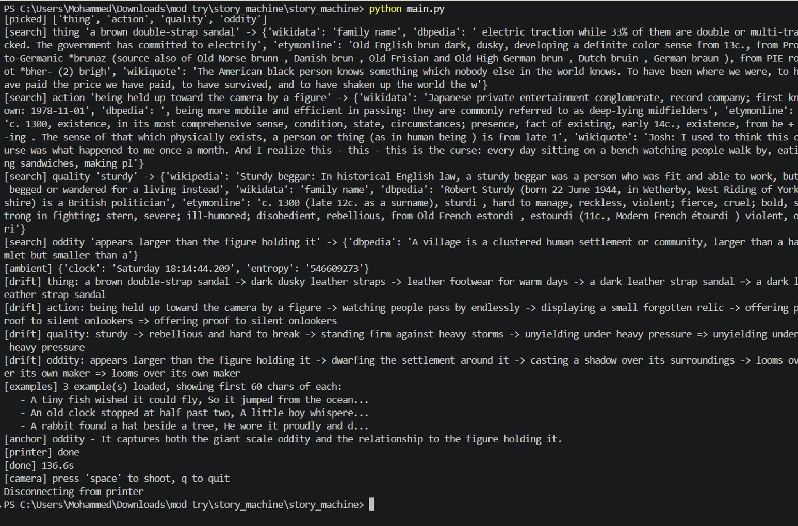
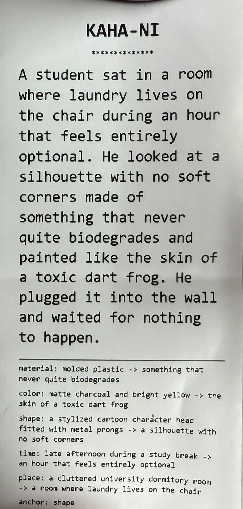
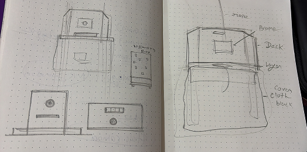
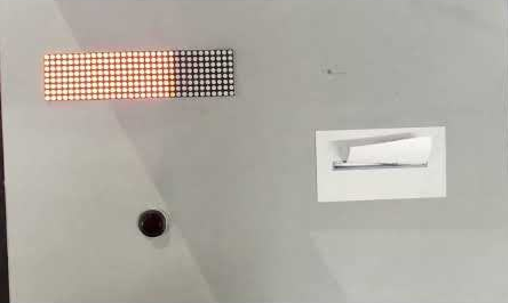
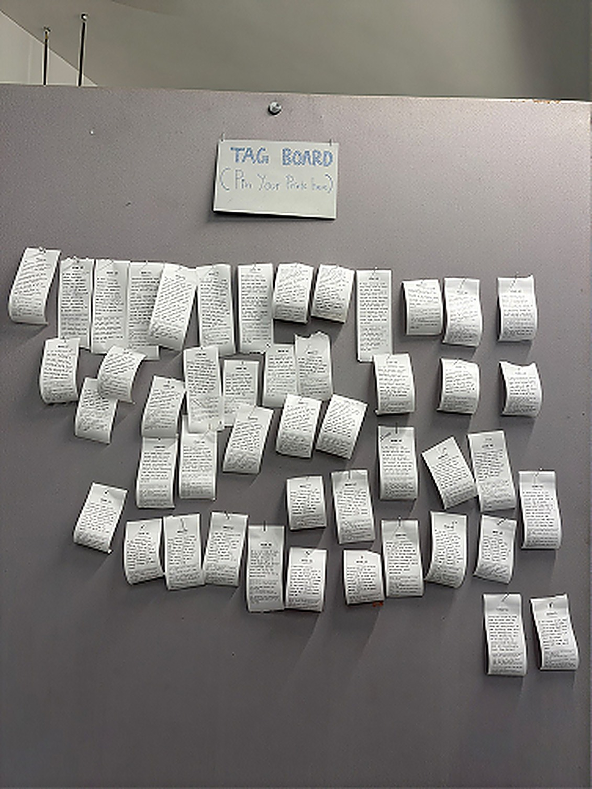
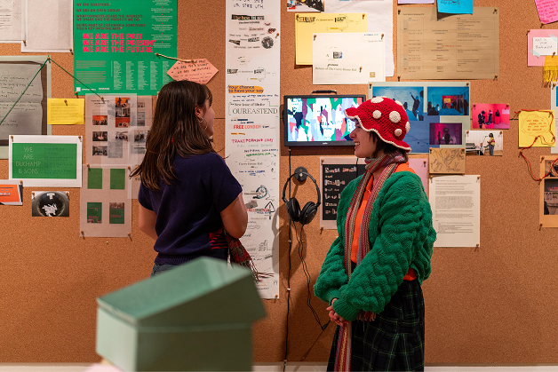

Kaha-ni
A machine that looks at an everyday object and prints a short story about what it might mean.

PROJECT DETAILS
Type: Interactive Installation
Role: Main Lead, Developer
Team: 4 people
Duration: To confirm
Context: Designing for Smart Living, Semester 07
Tools: Gemini (LLM), Arduino, camera, thermal printer, LED matrix
A visitor holds an object up to a camera and presses a button. About thirty seconds later, a four-line story prints on a slip of paper. The machine keeps nothing. The slip remembers for it.
See It in Action

WHAT WE WERE GIVEN
The brief was G5, "The Network That Only Prints": sensor nodes with a printer as their only output.
Left unattended, nothing is printed. In use, a person takes a slip away. Where the chain stops, the record becomes a physical object with a location.
OUR INTERPRETATION
A camera observes a personal object. A printer produces a story. The person decides whether to keep it or share it.
We kept the premise of sensing, printing and human action, and changed the mechanism to explore how an ordinary object could become the starting point for a narrative.
The Design Process
Three Ideations
Self-Service Check-Up
An installation for clinic waiting areas. A quick sensor scan captures basic health indicators and prints a small receipt, the only record of the interaction.
Game-Selection Station
A machine preloaded with role-playing games. A visitor picks one, and the printed slip assigns a role they carry into another space as the starting point for play.
Kaha-ni
A story machine for an art cafe. An object goes in, a short unexpected story comes out.
SELECTEDTHE OBSERVATION
We keep using objects long after they have lost their original condition: a worn toothbrush, a tangled charger, a bent key. They may no longer look new or work perfectly, but they can still carry personal significance.
THE MOTIVATION
We wanted to explore what happens when an object is interpreted beyond its functional identity, and what stories might emerge from its associations.
We interact with everyday objects without thinking. We recognise what they are, understand what they do, and move on. We wanted people to look again.
From the Scaffold to Kaha-ni
Sensor input Became a camera and the visitor's own object.
Printed output Became a generated narrative.
Person carries the slip Became a person who takes the slip or pins it to a board.
No screen Became an LED matrix that shows the machine is processing.
How Kaha-ni Works
Capture and Identify
The visitor presses a button and the machine photographs and identifies the object.
Explore Associations
It looks up related ideas and follows unexpected associations.
Create the Story
It connects those associations into a short, four-line story.
Print the Story
The slip prints for the visitor to take or leave behind.
HOW THE MACHINE SEES
The machine does not just name the object. It describes it through eight physical and abstract qualities, which makes this object interpretation, not object recognition.


Five Seeds. Multiple Paths.
The machine picks five of those attributes and uses them as starting points for a lateral search across nine online knowledge sources, queried through APIs for an object's origin, composition, history and behaviour.
Five selected attributes become the search starting points.
The system gathers related information from the nine sources.
What it finds creates further associations, pulling the search away from the object's literal meaning.
HOW THE STORY IS WRITTEN
The drifted connections and five pre-written rhyming example stories feed the model, which writes an original four-line story in that style.
01. Input Drifted phrases and connections are gathered.
02. Reference Five example rhyming stories guide the writing style and rhyme pattern.
03. Generate The machine combines the connections into a new four-line story.
04. Output The finished story prints through the thermal printer.

The Final Prototype


The Memory Board

The machine stores nothing: no object, story or moment is saved. The only memory is a wall board where visitors can pin their slips, or take them home instead.
No database, no cloud, just paper accumulating by hand. Because the story depends on what the internet says at that moment, the same object photographed on another day gives a different story. Nothing repeats, and the board is the record.
WHERE KAHA-NI BELONGS
An art cafe or workshop is already a place where people bring their creations and make things, so Kaha-ni becomes an extension of that. A visitor can bring an object they just made and get a story built from its qualities and associations. You make the object, Kaha-ni gives it a story.

OUTCOME
A working prototype that turns an ordinary object into a printed four-line story, with a paper memory board as the installation's only record.
REFLECTION
"This project pushed the idea that a machine can make people look at ordinary things again by misreading them on purpose. Instead of storing anything, it leaves the memory to a slip of paper and a wall of pins."